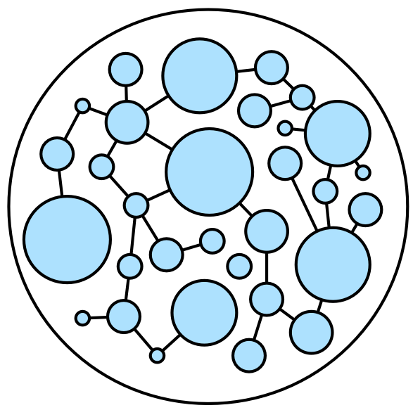

<!--
Licensed to the Apache Software Foundation (ASF) under one or more
contributor license agreements.  See the NOTICE file distributed with
this work for additional information regarding copyright ownership.
The ASF licenses this file to You under the Apache License, Version 2.0
(the "License"); you may not use this file except in compliance with
the License.  You may obtain a copy of the License at

  http://www.apache.org/licenses/LICENSE-2.0

Unless required by applicable law or agreed to in writing, software
distributed under the License is distributed on an "AS IS" BASIS,
WITHOUT WARRANTIES OR CONDITIONS OF ANY KIND, either express or implied.
See the License for the specific language governing permissions and
limitations under the License.
-->
<div class="container">
   <div class="container">
      <h3>The Benefits of Graph Computing</h3>
      <p> A <strong>graph</strong> is a structure composed of <strong>vertices</strong> and <strong>edges</strong>.
         Both vertices and edges can have an arbitrary number of key/value-pairs called <strong>properties</strong>.
         Vertices denote discrete objects such as a person, a place, or an event. Edges denote relationships between vertices. For instance, a person may know
         another person, have been involved in an event, and/or have recently been at a particular place. Properties express non-relational information about the
         vertices and edges. Example properties include a vertex having a name and an age, and an edge having a timestamp and/or a weight. Together, the aforementioned
         graph is known as a <strong>property graph</strong> and it is the foundational data structure of Apache TinkerPop.
      </p>
      <br/>
      <p>If a user's domain is composed of a heterogeneous set of objects (vertices) that can be related to one another in a multitude of ways (edges),
         then a graph may be the right representation to use. In a graph, each vertex is seen as an atomic entity (not simply a "row in a table") that
         can be linked to any other vertex or have properties added or removed at will. This empowers the data modeler to think in terms of actors within
         a world of complex relations as opposed to, in relational databases, statically-typed tables joined in aggregate. Once a domain is modeled, that
         model must then be exploited in order to yield novel, differentiating information. Graph computing has a rich history that includes not only query
         languages devoid of table-join semantics, but also algorithms that support complex reasoning: path analysis, vertex clustering and ranking, subgraph
         identification, and more. The world of applied graph computing offers a flexible, intuitive data structure along with a host of algorithms able to
         effectively leverage that structure.
      </p>
      <br/>
      <p><a href="#"></a>Apache TinkerPop&trade; is an open source, vendor-agnostic, graph computing framework distributed under the commercial friendly <a href="https://www.apache.org/licenses/LICENSE-2.0">Apache2 license</a>.
         When a data system is <a href="providers.html">TinkerPop-enabled</a>, its users are able to model their domain as a graph and analyze that graph using the <a href="gremlin.html">Gremlin graph traversal language</a>.
         Furthermore, all TinkerPop-enabled systems integrate with one another allowing them to easily expand their offerings as well as allowing users to choose the appropriate graph
         technology for their application. Sometimes an application is best served by an in-memory, transactional graph database. Sometimes a multi-machine distributed graph database will do the job.
         Or perhaps the application requires both a distributed graph database for real-time queries and, in parallel, a Big(Graph)Data processor for batch analytics. Whatever the application's
         requirements, there exists a TinkerPop-enabled graph system out there to meet its needs.
      </p>
   </div>
</div>
